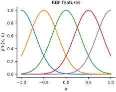
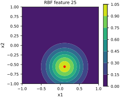

Vectorization#
This notebook assumes familiarity with the JAX basics. JAX provides NumPy-like arrays and functions that support automatic differentiation and compilation.
Ordinary JAX arrays are immutable. Indexed assignment such as x[i] = y is therefore invalid, while x += y creates a new array and rebinds x instead of mutating the original array. Indexed updates use the functional form x = x.at[i].set(y). This functional interface allows JAX to transform and compile computations predictably.
Vectorization lifts a function that acts on one input so that it acts on a batch of inputs. The resulting code is concise and can often be compiled more efficiently. We use radial basis functions as a running example. A weighted radial-basis model has the form
where
Here \(c_i\) is the center and \(\sigma>0\) is the bandwidth. The notebook focuses on evaluating the feature functions \(\phi_i\) over many centers and inputs; it does not fit the weights \(w_i\). In the code, sigma2 denotes \(\sigma^2\).
We begin with the radial basis function for one input and one center:
import jax.numpy as jnp
rbf = lambda x, c, sigma2: jnp.exp(-jnp.sum((x - c) ** 2, axis=-1) / (2.0 * sigma2))
Let’s demonstrate it in 1D:
x = jnp.array([0.5])
c = jnp.array([0.0])
sigma2 = 0.1
rbf(x, c, sigma2)
Array(0.2865048, dtype=float32)
Now we would like to vectorize it with respect to the input \(c_i\) so that we can pass all the centers at once.
We can do this by using the vmap function:
from jax import vmap
phi = vmap(rbf, in_axes=(None, 0, None), out_axes=0)
What just happened here? First, let’s use it:
centers = jnp.linspace(-1, 1, 10)
phi(x, centers, sigma2)
Array([1.3007298e-05, 2.8484085e-04, 3.8067168e-03, 3.1047985e-02,
1.5454279e-01, 4.6945971e-01, 8.7032479e-01, 9.8468637e-01,
6.7990482e-01, 2.8650481e-01], dtype=float32)
Let’s break down how we called vmap:
The first argument is just the function we want to vectorize.
The second argument,
in_axes, is a description of how we want to vectorize the function. The function has three inputs. So we pass a tuple with three elements. The first element isNonebecause we don’t want to vectorize with respect to the first input,x. Same with the third element. The second element is0because we want to vectorize with respect to the second input,c. The0here means that we want to vectorize with respect to the first dimension ofc. Wait a second. Does that mean that our code works with 2D arrays? Yes indeed!The third argument of
vmapisout_axes. This is a description of how we want to vectorize the output of the function. The output of the function is a scalar. So we pass0to indicate that we want to vectorize with respect to the first dimension of the output.
Okay. Let’s try it on 2D arrays:
# We will try it on this x:
x_2d = jnp.array([0.5, 0.7])
# Here are the 2D centers:
c1 = jnp.linspace(-1, 1, 10)
c2 = jnp.linspace(-1, 1, 10)
C = jnp.meshgrid(c1, c2)
centers = jnp.stack(C, axis=-1).reshape(-1, 2)
centers
Array([[-1. , -1. ],
[-0.7777778 , -1. ],
[-0.5555556 , -1. ],
[-0.33333328, -1. ],
[-0.11111113, -1. ],
[ 0.11111114, -1. ],
[ 0.33333337, -1. ],
[ 0.5555556 , -1. ],
[ 0.7777778 , -1. ],
[ 1. , -1. ],
[-1. , -0.7777778 ],
[-0.7777778 , -0.7777778 ],
[-0.5555556 , -0.7777778 ],
[-0.33333328, -0.7777778 ],
[-0.11111113, -0.7777778 ],
[ 0.11111114, -0.7777778 ],
[ 0.33333337, -0.7777778 ],
[ 0.5555556 , -0.7777778 ],
[ 0.7777778 , -0.7777778 ],
[ 1. , -0.7777778 ],
[-1. , -0.5555556 ],
[-0.7777778 , -0.5555556 ],
[-0.5555556 , -0.5555556 ],
[-0.33333328, -0.5555556 ],
[-0.11111113, -0.5555556 ],
[ 0.11111114, -0.5555556 ],
[ 0.33333337, -0.5555556 ],
[ 0.5555556 , -0.5555556 ],
[ 0.7777778 , -0.5555556 ],
[ 1. , -0.5555556 ],
[-1. , -0.33333328],
[-0.7777778 , -0.33333328],
[-0.5555556 , -0.33333328],
[-0.33333328, -0.33333328],
[-0.11111113, -0.33333328],
[ 0.11111114, -0.33333328],
[ 0.33333337, -0.33333328],
[ 0.5555556 , -0.33333328],
[ 0.7777778 , -0.33333328],
[ 1. , -0.33333328],
[-1. , -0.11111113],
[-0.7777778 , -0.11111113],
[-0.5555556 , -0.11111113],
[-0.33333328, -0.11111113],
[-0.11111113, -0.11111113],
[ 0.11111114, -0.11111113],
[ 0.33333337, -0.11111113],
[ 0.5555556 , -0.11111113],
[ 0.7777778 , -0.11111113],
[ 1. , -0.11111113],
[-1. , 0.11111114],
[-0.7777778 , 0.11111114],
[-0.5555556 , 0.11111114],
[-0.33333328, 0.11111114],
[-0.11111113, 0.11111114],
[ 0.11111114, 0.11111114],
[ 0.33333337, 0.11111114],
[ 0.5555556 , 0.11111114],
[ 0.7777778 , 0.11111114],
[ 1. , 0.11111114],
[-1. , 0.33333337],
[-0.7777778 , 0.33333337],
[-0.5555556 , 0.33333337],
[-0.33333328, 0.33333337],
[-0.11111113, 0.33333337],
[ 0.11111114, 0.33333337],
[ 0.33333337, 0.33333337],
[ 0.5555556 , 0.33333337],
[ 0.7777778 , 0.33333337],
[ 1. , 0.33333337],
[-1. , 0.5555556 ],
[-0.7777778 , 0.5555556 ],
[-0.5555556 , 0.5555556 ],
[-0.33333328, 0.5555556 ],
[-0.11111113, 0.5555556 ],
[ 0.11111114, 0.5555556 ],
[ 0.33333337, 0.5555556 ],
[ 0.5555556 , 0.5555556 ],
[ 0.7777778 , 0.5555556 ],
[ 1. , 0.5555556 ],
[-1. , 0.7777778 ],
[-0.7777778 , 0.7777778 ],
[-0.5555556 , 0.7777778 ],
[-0.33333328, 0.7777778 ],
[-0.11111113, 0.7777778 ],
[ 0.11111114, 0.7777778 ],
[ 0.33333337, 0.7777778 ],
[ 0.5555556 , 0.7777778 ],
[ 0.7777778 , 0.7777778 ],
[ 1. , 0.7777778 ],
[-1. , 1. ],
[-0.7777778 , 1. ],
[-0.5555556 , 1. ],
[-0.33333328, 1. ],
[-0.11111113, 1. ],
[ 0.11111114, 1. ],
[ 0.33333337, 1. ],
[ 0.5555556 , 1. ],
[ 0.7777778 , 1. ],
[ 1. , 1. ]], dtype=float32)
Here we go:
phi(x_2d, centers, sigma2)
Array([6.89654367e-12, 1.51024249e-10, 2.01834394e-09, 1.64618186e-08,
8.19394259e-08, 2.48910140e-07, 4.61451378e-07, 5.22086680e-07,
3.60489139e-07, 1.51906477e-07, 2.35541475e-10, 5.15800469e-09,
6.89334883e-08, 5.62229616e-07, 2.79852247e-06, 8.50115794e-06,
1.57601899e-05, 1.78310984e-05, 1.23119853e-05, 5.18814613e-06,
4.90947327e-09, 1.07510104e-07, 1.43680620e-06, 1.17187374e-05,
5.83305882e-05, 1.77192778e-04, 3.28495167e-04, 3.71659669e-04,
2.56623025e-04, 1.08138243e-04, 6.24507166e-08, 1.36757831e-06,
1.82768235e-05, 1.49067622e-04, 7.41991331e-04, 2.25397199e-03,
4.17860644e-03, 4.72767837e-03, 3.26436060e-03, 1.37556787e-03,
4.84810926e-07, 1.06166626e-05, 1.41885001e-04, 1.15722849e-03,
5.76015608e-03, 1.74978171e-02, 3.24389637e-02, 3.67014743e-02,
2.53415871e-02, 1.06786806e-02, 2.29689908e-06, 5.02987386e-05,
6.72210939e-04, 5.48262103e-03, 2.72900127e-02, 8.28997865e-02,
1.53686732e-01, 1.73881322e-01, 1.20061293e-01, 5.05925789e-02,
6.64117169e-06, 1.45431986e-04, 1.94360688e-03, 1.58522557e-02,
7.89053515e-02, 2.39693373e-01, 4.44364190e-01, 5.02754092e-01,
3.47140938e-01, 1.46281540e-01, 1.17187374e-05, 2.56623520e-04,
3.42961005e-03, 2.79722493e-02, 1.39233172e-01, 4.22953218e-01,
7.84107029e-01, 8.87139499e-01, 6.12550795e-01, 2.58122504e-01,
1.26197601e-05, 2.76354083e-04, 3.69330007e-03, 3.01229302e-02,
1.49938315e-01, 4.55472648e-01, 8.44394267e-01, 9.55348551e-01,
6.59647703e-01, 2.77968645e-01, 8.29382043e-06, 1.81622396e-04,
2.42726924e-03, 1.97970644e-02, 9.85408276e-02, 2.99340725e-01,
5.54943562e-01, 6.27863705e-01, 4.33526397e-01, 1.82683513e-01], dtype=float32)
Now, let’s also vectorize this with respect to the first input, x:
vphi = vmap(phi, in_axes=(0, None, None), out_axes=0)
xs = jnp.linspace(-1, 1, 100).reshape(-1, 1)
cs = jnp.linspace(-1, 1, 5).reshape(-1, 1)
phis = vphi(xs, cs, sigma2)
print(phis.shape)
(100, 5)
Let’s plot them:
fig, ax = plt.subplots(figsize=FIGURE_SIZES["half_standard"])
ax.plot(xs, phis)
ax.set(xlabel="x", ylabel="phi(x, c)", title="RBF features")
finalize_axes(keep_box=False)
array([<Axes: title={'center': 'RBF features'}, xlabel='x', ylabel='phi(x, c)'>],
dtype=object)

And the same code also works on 2D. Here are some grid points:
x1 = jnp.linspace(-1, 1, 50)
x2 = jnp.linspace(-1, 1, 50)
X1, X2 = jnp.meshgrid(x1, x2)
X = jnp.stack((X1, X2), axis=-1).reshape(-1, 2)
X.shape
(2500, 2)
We will evaluate on the centers we constructed previously:
centers.shape
(100, 2)
Here are all the basis functions on these points:
phis = vphi(X, centers, sigma2)
phis.shape
(2500, 100)
Let’s do the contour of one of them:
i = 25
fig, ax = plt.subplots(figsize=FIGURE_SIZES["half_tall"])
ax.set_aspect("equal")
c = ax.contourf(X1, X2, phis[:, i].reshape(50, 50))
ax.plot(centers[i, 0], centers[i, 1], "ro")
ax.set(xlabel="x1", ylabel="x2", title=f"RBF feature {i}")
plt.colorbar(c)
finalize_axes(keep_box=True)
array([<Axes: title={'center': 'RBF feature 25'}, xlabel='x1', ylabel='x2'>,
<Axes: label='<colorbar>'>], dtype=object)

The same function now handles one- and two-dimensional points. vmap introduces the batch axes without an explicit Python loop, and jax.jit can compile the batched computation.
The same transformations can be stacked with decorators:
from jax import jit
import functools as ft
@jit
@ft.partial(vmap, in_axes=(0, None, None), out_axes=0)
@ft.partial(vmap, in_axes=(None, 0, None), out_axes=0)
def rbf_basis(x, c, sigma2):
return jnp.exp(-jnp.sum((x - c) ** 2, axis=-1) / (2.0 * sigma2))
rbf_basis(X, centers, sigma2).shape
(2500, 100)
Compare the time it takes to run the function with and without jit.
Here is without jit:
%timeit vphi(X, centers, sigma2).block_until_ready()
790 μs ± 357 μs per loop (mean ± std. dev. of 7 runs, 1,000 loops each)
Here is with jit:
%timeit rbf_basis(X, centers, sigma2).block_until_ready()
271 μs ± 17.7 μs per loop (mean ± std. dev. of 7 runs, 1,000 loops each)
I hope you are sold on why we go through the trouble of explaining functional programming.